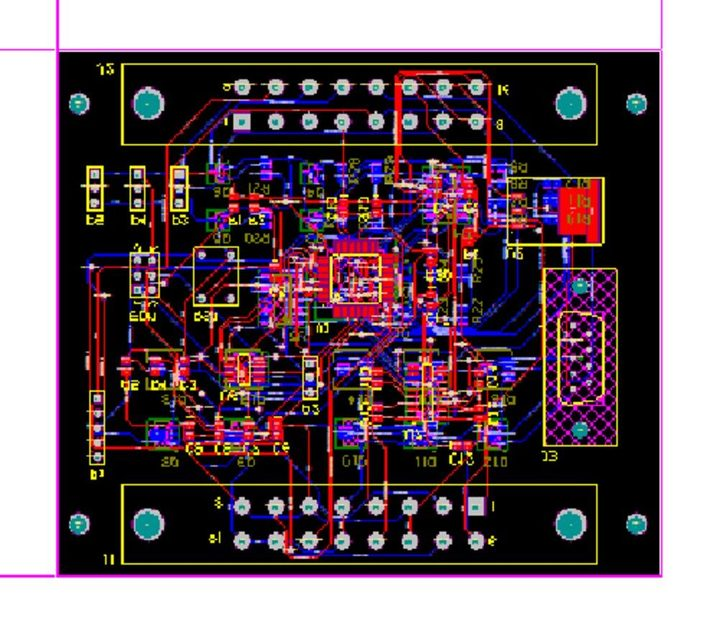
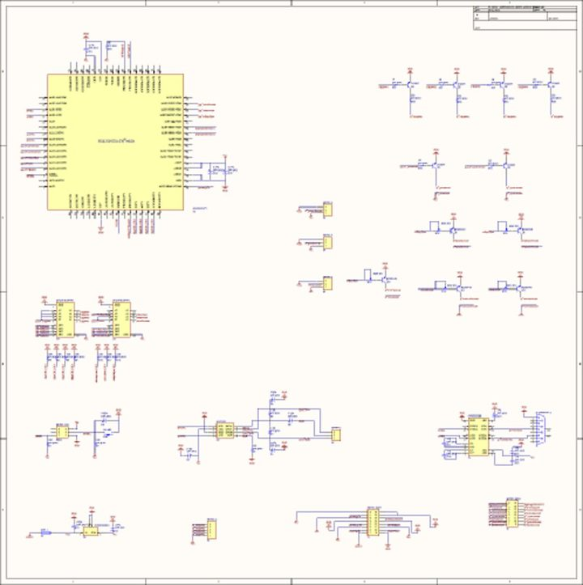

Dashboard Module
The instrument cluster for the off‑road cars built by the Baja SAE team of Universidad Simón Bolívar ("Baja USB"). One board behind the dash reads engine RPM, road speed and temperature, listens to the car's CAN bus, drives the two needle gauges and every dashboard lamp, and streams a telemetry frame out over RS‑232. It is the hub of the wider Baja SAE USB vehicle electronics — it receives the fuel‑level module's CAN frame and rebroadcasts the gauge values for the on‑board logger. Continues the team's earlier “Tablero 2011‑2012” firmware; 2012‑2013.
The assembled board — BAJA SAE USB 2012 · Dashboard Module — with the keyed harness connectors fitted.
Why
The Baja car needs a real dashboard: a tachometer and speedometer the driver can read at a glance, warning lights for fuel, temperature and brake, plus headlight and turn‑signal control. The team already had sensors scattered around the car and a CAN bus tying the electronics together — so one microcontroller board can gather everything and run the whole panel, instead of a bundle of separate gauges and relays.
What It Reads
| Signal | How it is read |
|---|---|
| Engine RPM | Hall‑effect sensor on the engine — one pulse per revolution into a keyboard‑interrupt pin. A free‑running timer measures the period T_rpm; rpm_duty = 3060 / T_rpm. |
| Road speed | proximity sensor on a wheel — one pulse per pass into a second pin; vel_duty = 16320 / T_vel. No pulse for ~70 timer ticks → forced to 0 (car stopped). |
| Engine temperature | two bytes on a dedicated UART (SCI_Temp). |
CAN 0x222 | fuel level 0–11, from the fuel‑level module. |
CAN 0x333 | 1‑byte bitfield from the steering‑wheel unit: bit0 night lights, bit1 right turn, bit2 left turn, bit3 brake. |
What It Drives
| Output | How |
|---|---|
| Tachometer / speedometer needles | a PWM channel each → RC filter → a moving‑coil meter (a voltmeter re‑scaled for RPM / km h) |
| Headlights (low beam) | PWM dimming, gated left / right by the tri‑state buffers |
| Panel / night lights | PWM dimming, working with a separate photo‑sensor box |
| Turn signals | a timer ISR ramps the PWM duty 0 → 130 → 0 so the lamps fade in and out instead of hard‑blinking |
| 4 indicator LEDs | via the buffers: night‑lights on · low fuel (level ≤ 2) · over‑temp (≥ 100) · brake |
Low‑side transistor drivers (2N3904 for logic‑level loads, BCX54 for the lamps) switch everything; the two DM74LS126 quad tri‑state buffers give eight individually‑enabled lamp / LED lines, and five SMD trimmers calibrate the gauges.
Firmware
The MCU is a Freescale MCF51JM128 (ColdFire V1, 32‑bit, 48 MHz), programmed in CodeWarrior for ColdFire V1 with Processor Expert and flashed through the BDM header with a P&E Multilink. The main loop is a flat round‑robin — read the sensors, update each gauge and lamp, and every few ticks send the CAN and serial frames:
Init_rutine(); // needle sweep + lamp test + LED chase
WaitCAN_rutine(); // blink all 4 LEDs until the first CAN frame
for(;;){
Gasolina(GasData); Luces_nocturnas(PantallaData);
Luces_cruce(PantallaData); Tacometro(rpm_duty);
Velocimetro(vel_duty); Temperatura(temp_val);
Brake(PantallaData);
if(CAN_count == 3) SendCAN_Data(rpm_duty, vel_duty, temp_val);
SendSCI_Data(rpm_duty, vel_duty, temp_val, GasData, PantallaData);
}The start‑up self‑test sweeps both needles up and back, cycles every lamp and runs an LED chase; then all four LEDs blink until the first CAN frame arrives, so a dead bus is obvious before the car moves.
The repository also carries the working predecessor firmware (Información 2012‑2013/Tablero 2011‑2012/, same MCU family) and both builds — S08 and ColdFire — of the companion steering‑wheel display unit.
Bus Traffic Out
| Link | Frame |
|---|---|
| CAN (TJA1040) | ID 0x111, 3 bytes [rpm, speed, temp], every 3 timer ticks — for the on‑board logger |
| RS‑232 (MAX232 + DB9) | 6‑byte frame [rpm, speed, temp, fuel, controls, 0xFF] |
Hardware
Compact 2‑layer board (Altium Designer, ECOs dated December 2012) sized for the dashboard box, with two 16‑pin harness headers top and bottom and the DB9 on one edge.
| Ref | Part | Function |
|---|---|---|
| U1 | Freescale MCF51JM128 (64‑pin) | ColdFire V1 MCU |
| U2 | National LM2940CS‑5.0 + fuse | automotive LDO, 12 V car rail → 5 V |
| U6 | NXP TJA1040 | CAN transceiver |
| U7 | MAX232CSE + DB9 | RS‑232 telemetry out |
| U4, U5 | DM74LS126A | quad tri‑state buffers — 8 gated lamp / LED lines |
| Q1–Q6, Q8–Q12 | 2N3904 / BCX54 | low‑side lamp & LED drivers |
| R14–R19 | SMD trimmers | gauge / signal calibration |
| J1, J2 | 8×2 headers | sensor + lamp harness |


The board layout, and the schematic overview — MCU at one corner, the transistor driver stages filling one side, power / CAN / RS‑232 along the bottom.
A companion photo‑sensor board (circuito fotosensible, in its own printed box) feeds the automatic night‑lights, and a SolidWorks two‑part enclosure (Caja Tablero) houses the board behind the dash.
Posted In:
Vehicles